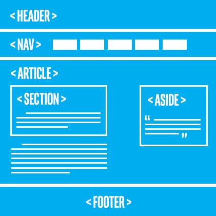

Introduction to Semantic Elements

Semantic HTML is HTMl that concentrates on the meaning of information on webpages instead of its presentation or look.
Webpage Structure

Each section refers to a part of the document
- The header can be a starting point for the document or individual sections. It typically contains the introduction.
- The nav refers to navigation. It could contain a set of navigation links, such as a table of contents of a book.
- The section refers to sections ina document. For example, a document about plants could contain several section under headings such as perennials,annuals,soil type,etc.
- The aside refers to content that is apart from the main content. For example, in an article about a young architects from Umbria region of italy.
- The article refers to independent content. If an article is extracted out of the document, it should make sense all by itself. Articles, blog posts, frequently asked questions are examples.
- The footer contains typical footer information such as authoring,copyrights and contact information.